At a glance
Assignment
- Title
- Foundations of Deep Learning Pipelines and Architectures
- Instructor
- Lê Thành Sách
- Group
- NNs
- Members
- Nguyễn Nhật Nam (2352778), Hồ Hồng Phúc Nguyên (2352824), Phan Quốc Đại Sơn (2353053)
Milestones
- M1 Draft
- 23 Sep 2026 · 25% of A1 · Submitted
Pipeline verified end to end; linear and MLP trained and evaluated.
- M2 Final
- 21 Oct 2026 · 75% of A1 · Final package
All five mandatory models trained under one protocol (seven configurations), full comparison, error analysis, report and slides.
Links
| Item | Link | Status |
|---|---|---|
| Source code | github.com/nguyenhohongphuc/co3133-deep-learning-project | Done |
| Run folders (config, history, metrics, figures) | results/a1/runs/ · comparison.csv | Done |
| Checkpoints (or reconstruction instructions) | Seven best.pt files, one per run at results/a1/runs/<run_id>/best.pt · Checkpoint notes (README) | Done |
| Report (PDF) | NNs_A1_Report.pdf | Done |
| Slides (PDF) | NNs_A1_Slides.pdf | Done |
| YouTube presentation | CO3133-Semester-261 – Group NNs – Assignment 1 | Done |
Problem statement
Motivation. Online clothing retailers receive product photographs faster than staff can label them, and the category a garment is filed under drives search, recommendation and stock reporting. Fashion-MNIST is the controlled-scale stand-in for that task: it keeps the ten-way garment decision while removing the confounds of colour, background and resolution, so that differences between models can be attributed to the model rather than to the data.
Input. One grayscale image x ∈ R1×28×28, pixel
intensities in [0, 255] before preprocessing. Output. One of
K = 10 mutually exclusive classes (T-shirt/top, Trouser, Pullover, Dress, Coat, Sandal, Shirt,
Sneaker, Bag, Ankle boot). Prediction unit. One image, one label — single-label
multi-class classification, not multi-label.
Formulation. Each model is a function
fθ: R1×28×28 → R10 producing raw
logits z = fθ(x). Class probabilities are
p(y = k | x) = softmax(z)k and training minimises the mean cross-entropy
L(θ) = -(1/N) ∑i log p(yi | xi) over the training
split. The softmax is never applied before the loss: nn.CrossEntropyLoss takes the logits
directly and applies log-softmax internally, so applying softmax first would compute it twice and
flatten the gradients. Prediction is ŷ = argmaxk zk.
Main difficulties. (i) Several classes are visually near-identical at 28×28 — Shirt, T-shirt/top, Pullover and Coat share outline and texture, and this one cluster dominates the error budget of every model. (ii) The images are grayscale and low-resolution, so colour and fine texture cues are unavailable. (iii) The architecture families receive genuinely different views of the same image — a flat 784-vector, a 2D grid, or a sequence of rows, columns or patches — which is exactly the inductive-bias question this assignment is built around.
Research question
Under one fixed data split, one seed and one shared training protocol, how much does the way an image is represented to a model — flattened pixels, a 2D grid, or a sequence of rows, columns or patches — change classification quality on Fashion-MNIST, and is the quality gained worth the parameters and the training and inference time it costs?
Learning objectives covered
- Complete PyTorch pipeline: Dataset, DataLoader, preprocessing, optimization, evaluation.
- Linear/softmax, MLP, CNN, LSTM, and Transformer on the same task, all trained from scratch.
- Comparison with multiple quantitative metrics plus qualitative evidence, not accuracy alone.
- Analysis of inductive bias and input representation (flattened pixels, spatial features, row/column/patch sequences).
Dataset description and EDA
Datasets used
| Dataset | Role | Source / version / license | Samples |
|---|---|---|---|
| MNIST | Development and debugging only | torchvision.datasets.MNIST · CC BY-SA 3.0 | 60,000 train / 10,000 test — not used for any reported number |
| Fashion-MNIST | Primary results (main comparison) | Zalando Research, via torchvision.datasets.FashionMNIST · MIT licence | 70,000 grayscale 28×28 images: 60,000 official train, 10,000 official test, 10 balanced classes |
| CIFAR-10 | Optional extension | Not used | — |
EDA (required items)
- Class distribution —
results/a1/figures/a1_class_distribution.pngwith the counts inresults/a1/tables/a1_class_distribution.csv: 6,000 images per class in the official train set, 5,400 / 600 after the train/validation split. - Input size / shape — raw images are
uint828×28 in [0, 255]; after preprocessing each sample is a float32 tensor of shape[1, 28, 28], batched as[B, 1, 28, 28]. - Imbalance analysis — the dataset is perfectly balanced (10 % per class in every split), so no resampling or class weighting is used. Macro-F1 is still reported next to accuracy because per-class difficulty is very uneven even when the counts are not.
- Representative samples —
results/a1/figures/a1_representative_samples.png. - Storage size, formats, bias and limitations — about 30 MB of idx-ubyte files fetched by
scripts/prepare_data.py(git-ignored; see the README). Limitations: one centred object per image, grayscale, low resolution and no metadata, so conclusions transfer poorly to real catalogue photographs.
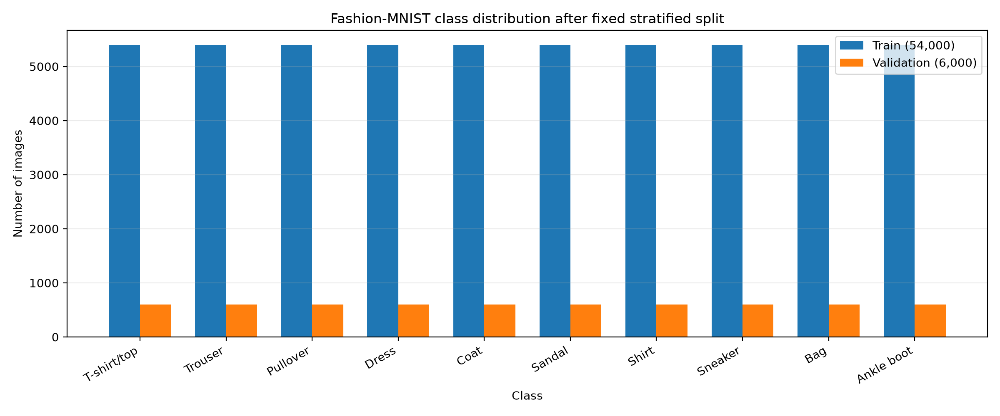
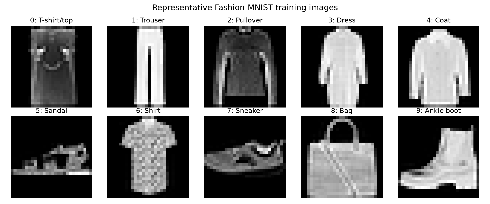
Data splitting
| Split | Samples | Source | Stratified |
|---|---|---|---|
| Train | 54,000 (5,400 per class) | Custom split of the official train set | Yes |
| Validation | 6,000 (600 per class) | Custom split of the official train set | Yes |
| Test | 10,000 (1,000 per class) | Official Fashion-MNIST test set, untouched | Official |
Seed: 42 · Split unit: one image ·
Leakage prevention: the split is generated once by python -m src.data.split (scikit-learn
StratifiedShuffleSplit) and committed as results/a1/splits/split_seed42.json;
every loader reads that file and nobody re-splits on the fly. The train and validation index sets are
verified disjoint and to cover all 60,000 training images, the normalization statistics are computed on the
54,000 training images only, and the test set is read solely by src/evaluate.py.
All seven configurations in the main comparison use this same split and seed.
Preprocessing
No cleaning or resizing is needed: Fashion-MNIST ships as fixed-size 28×28 grayscale images with no
invalid annotations. The pipeline is ToTensor() (scaling to [0, 1]) followed by
Normalize(mean=0.286209, std=0.353160), both statistics measured on the 54,000-image training
split only. No augmentation, resizing or padding is applied, so every architecture sees
identical inputs. Input tensors after preprocessing are [B, 1, 28, 28] float32 with
[B] int64 labels; the sequence models reshape that tensor inside forward(), so the
data pipeline is shared unchanged.
Methodology
Pipeline overview
Walkthrough. scripts/prepare_data.py downloads Fashion-MNIST once.
src/data/split.py produces the stratified 54k/6k split and commits it as a JSON index file, so
every model in the comparison trains on byte-identical data. src/data/transforms.py converts
each image to a float tensor and normalizes it with the training-split statistics;
src/data/loaders.py wraps the three splits in DataLoaders with seeded workers.
src/train.py reads configs/a1.yaml, seeds every RNG, builds the model through a
registry and hands everything to fit() in src/engine/trainer.py, which runs the
train/validate loop, logs one row per epoch to history.csv and saves best.pt
whenever validation macro-F1 improves. src/evaluate.py then loads the best checkpoint, runs the
test split exactly once, times inference, and writes test_metrics.json and the figures required
by handbook §12.1.
Mandatory models
All five families are self-implemented as nn.Module classes in src/models/ and
trained from scratch; library building blocks are PyTorch layers (nn.Linear,
nn.Conv2d, nn.LSTM, nn.TransformerEncoderLayer). No pretrained
weights are used. Every model returns raw logits [B, 10].
| # | Model | Input representation | Key design notes | Params | Status |
|---|---|---|---|---|---|
| 1 | Linear / softmax | Flattened 784-vector | One Linear(784, 10) to logits; CrossEntropyLoss on raw logits (no softmax before the loss) | 7,850 | Done |
| 2 | MLP | Flattened 784-vector | 784 → 256 → 128 → 10, ReLU after each hidden layer, dropout 0.2 against the overfitting the flattened-pixel models show | 235,146 | Done |
| 3 | CNN (self-designed) | 2D grid [1, 28, 28] | Two blocks of Conv 3×3 (padding 1) → BatchNorm → ReLU → MaxPool 2×2, with 32 then 64 channels; feature maps go 28×28×32 → 14×14×32 → 14×14×64 → 7×7×64; flatten (3,136) → dropout 0.25 → Linear(3136, 10) | 50,378 | Done |
| 4 | LSTM | Sequence of rows, columns, or 7×7 patches | One-layer unidirectional LSTM, hidden size 128. Rows: T = 28 timesteps, each a 28-pixel row; columns: the transposed image, T = 28 × 28; patches: T = 16 non-overlapping 7×7 patches flattened to 49 values in raster order. The last hidden state hT ∈ R128 summarises the sequence and feeds Linear(128, 10) | 82,186 (rows, cols) 92,938 (patches) | Done |
| 5 | Transformer | Sequence of 16 patch tokens (7×7) | Each 49-value patch is projected by Linear(49, 128); a learnable CLS token is prepended (17 tokens) and a learned positional embedding is added. Four pre-built encoder blocks (4 heads, dmodel = 128, FFN 128→256→128, GELU, dropout 0.1). Attention takes the 17 token vectors [B, 17, 128], forms queries, keys and values from them, and returns 17 updated vectors of the same shape in which every token is a weighted mix of all others; the CLS output is layer-normalised and fed to Linear(128, 10) | 540,170 | Done |
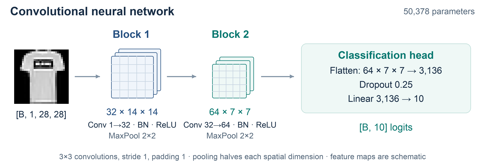
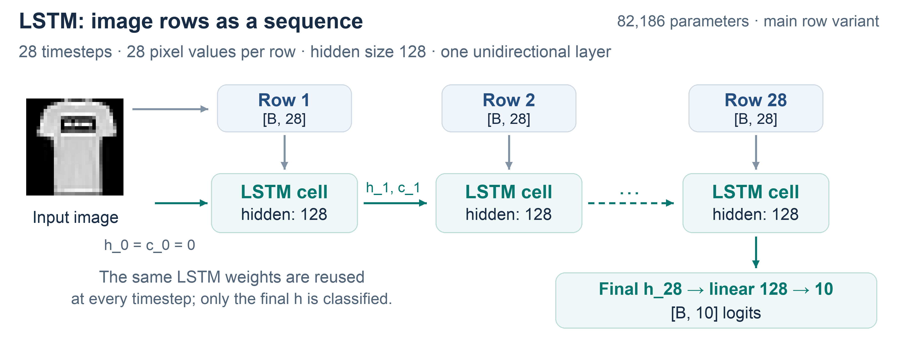
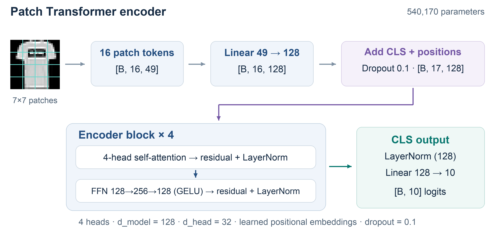
Inductive bias in one line each. Linear and MLP assume nothing about which pixels are neighbours. The CNN assumes locality and translation equivariance: one 3×3 kernel is reused at every position and pooling makes small shifts irrelevant. The LSTM assumes an ordering: it reads the garment top to bottom (rows), left to right (columns) or patch by patch, and must carry everything it needs in one 128-d state. The Transformer assumes almost nothing: every patch can attend to every other, and position is only known through a learned embedding, so spatial structure has to be learned from the data.
Optional extensions (do not replace core work)
- Done: LSTM sequence-representation ablation (rows vs. columns vs. patches), reported below.
- Not done: LSTM vs. GRU (the code supports
cell: gru), multi-seed study, matched-parameter comparison, augmentation ablation, CIFAR-10.
Experimental setup
Training configuration
| Setting | Value (identical for all seven configurations) |
|---|---|
| Loss | Cross-entropy on raw logits |
| Optimizer | Adam, learning rate 1e-3, weight decay 0, no scheduler |
| Batch size / epochs | 128 / up to 50 epochs |
| Regularization | Per-model only: dropout 0.2 (MLP), 0.25 (CNN), 0.1 (Transformer); BatchNorm in the CNN; none for Linear and LSTM |
| Early stopping | Patience 5 epochs on validation macro-F1 |
| Checkpoint criterion | Best validation macro-F1 (best.pt). Validation loss is logged but not used for selection, because macro-F1 is the reported metric and the two can disagree. |
| Augmentation / mixed precision / pretrained weights | None / no / no |
| Hyperparameter selection | Shared defaults, no per-model search, so architecture and representation are the only factors that change (handbook §12.2) |
Environment and fairness
- Hardware
- NVIDIA GeForce RTX 4060 Laptop GPU (CUDA 12.6), AMD Ryzen 7 7735HS, 15.2 GB RAM, Windows 11. All seven reported runs train and are timed on the GPU (
device: cudain each run'smetrics.json). - Software versions
- Python 3.10.21 · PyTorch 2.14.1+cu126 (as recorded in each run's
metrics.json) · torchvision 0.29.0 · NumPy 2.2.6 · pandas 2.3.3 · scikit-learn 1.7.2 · matplotlib 3.10.9. - Seed
- 42 for every run. Python, NumPy, torch and the DataLoader workers are seeded through
src/utils/seed.py. - Timing protocol
- Training time: wall-clock of the whole fit, including validation and checkpoint saves. Inference time: median of 5 forward-only passes over the 10,000 test images at batch 128 after 3 warm-up batches, excluding preprocessing and host-to-device copies, reported per image.
Fairness constraints: identical dataset split for all models, identical evaluation protocol and metrics, same hardware, and the hardware, software, seed and checkpoint-selection rule reported above.
Experimental design
| # | Hypothesis | Changed factor | Fixed factors | Metrics | Conclusion criterion | Outcome |
|---|---|---|---|---|---|---|
| E1 | Hidden layers raise macro-F1, because the classes are not linearly separable in raw pixel space. | Linear → MLP (both on flattened pixels) | Split, seed, optimizer, lr, batch size, epoch budget, checkpoint rule | Accuracy, macro-F1, params, training and inference time | MLP macro-F1 clearly above linear | Supported: +5.30 macro-F1 points |
| E2 | A CNN beats both flattened-pixel models, because weight sharing and locality match image structure. | Flat vector → 2D grid | Same as E1 | As E1, plus per-class F1 on the upper-body cluster | CNN above the MLP, with the gain concentrated in Shirt/Pullover/Coat | Supported: +2.38 points over the MLP with 4.7× fewer parameters; largest gains on Pullover (+6.9) and Coat (+5.4) |
| E3 | Sequence models reach comparable quality but cost more inference time, because the recurrence or attention cannot exploit the 2D structure directly. | 2D grid → row or patch sequence (LSTM, Transformer) | Same as E1 | As E1, emphasis on inference time | Quality within ~2 points of the CNN while slower per image | Supported: LSTM rows −1.87, Transformer −3.32 points; 1.3× and 3.8× the CNN's inference time |
| E4 | For the LSTM, the scan order matters: rows keep each garment's horizontal structure intact per step. | Rows → columns → 7×7 patches | LSTM cell, hidden size, everything else | As E1 | Rows best by more than ~1 point | Supported for this seed: rows 89.89, columns 88.66, patches 88.38 macro-F1 |
Results
Main comparison (Fashion-MNIST test set)
| Model | Accuracy (%) | Macro-F1 (%) | Parameters | Training time | Epochs (best index) | Inference (µs / image) | Test errors |
|---|---|---|---|---|---|---|---|
| Linear / softmax | 84.03 | 84.08 | 7,850 | 508 s | 17 (11) | 0.52 | 1,597 |
| MLP | 89.38 | 89.38 | 235,146 | 785 s | 28 (22) | 2.36 | 1,062 |
| CNN | 91.82 | 91.76 | 50,378 | 367 s | 13 (7) | 3.49 | 818 |
| LSTM – rows | 89.92 | 89.89 | 82,186 | 757 s | 27 (21) | 4.58 | 1,008 |
| Transformer – patches | 88.46 | 88.44 | 540,170 | 502 s | 17 (11) | 13.34 | 1,154 |
| LSTM – columns (ablation) | 88.61 | 88.66 | 82,186 | 730 s | 26 (20) | 4.72 | 1,139 |
| LSTM – patches (ablation) | 88.33 | 88.38 | 92,938 | 728 s | 26 (20) | 3.74 | 1,167 |
Seed 42, one run per configuration, checkpoint selected by best
validation macro-F1, test split read once per model. Epoch index starts at 0. Source:
results/a1/tables/comparison.csv, built by scripts/make_tables.py from each run's
test_metrics.json. With a single seed, no standard deviation is available.
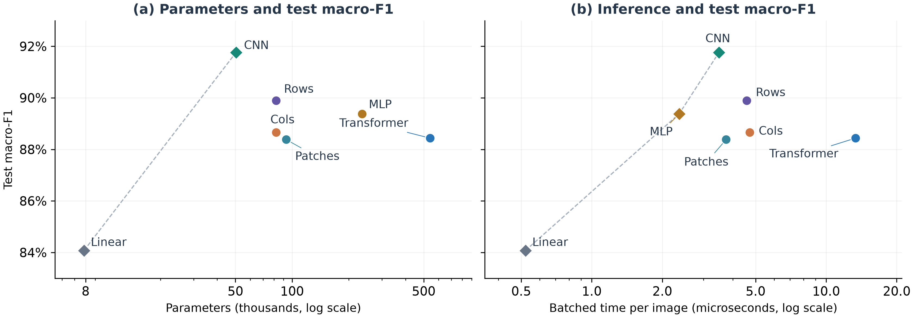
Per-class F1 (%)
| Class | Linear | MLP | CNN | LSTM rows | Transformer |
|---|---|---|---|---|---|
| T-shirt/top | 79.73 | 84.86 | 87.71 | 83.84 | 83.97 |
| Trouser | 96.68 | 97.99 | 98.95 | 97.92 | 97.92 |
| Pullover | 73.13 | 80.76 | 87.70 | 84.05 | 80.24 |
| Dress | 85.12 | 89.63 | 90.90 | 89.45 | 88.67 |
| Coat | 74.65 | 81.62 | 86.99 | 83.82 | 79.54 |
| Sandal | 92.83 | 96.88 | 98.35 | 97.96 | 96.95 |
| Shirt | 58.94 | 73.33 | 75.54 | 71.47 | 69.59 |
| Sneaker | 91.88 | 94.89 | 96.45 | 95.91 | 94.65 |
| Bag | 93.66 | 97.83 | 98.01 | 98.00 | 96.73 |
| Ankle boot | 94.14 | 96.02 | 97.02 | 96.50 | 96.11 |
Training behaviour
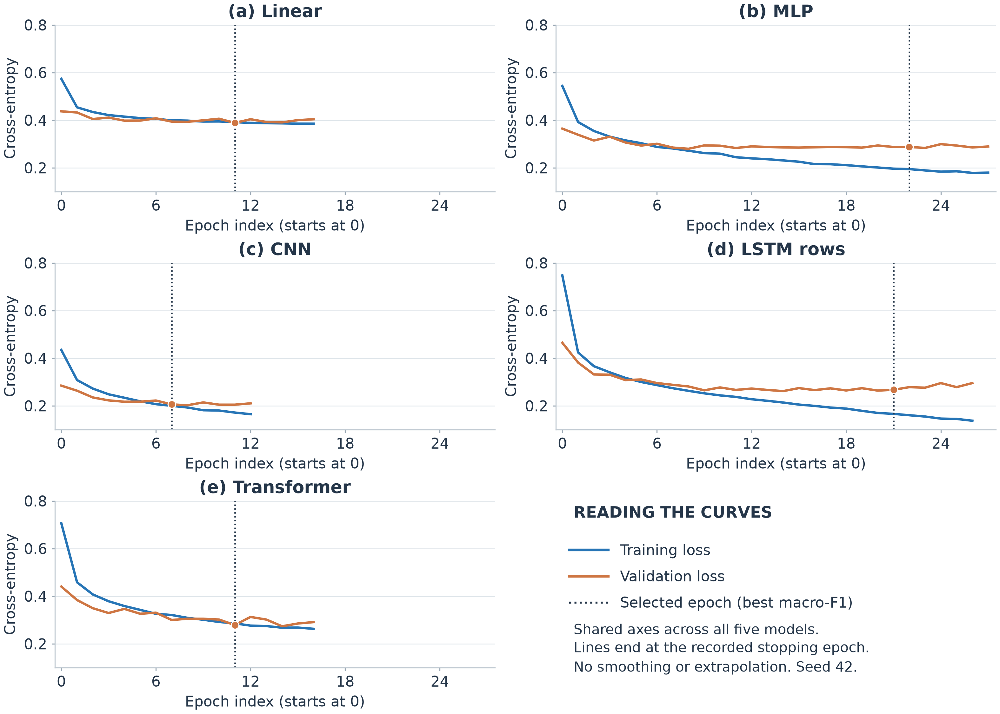
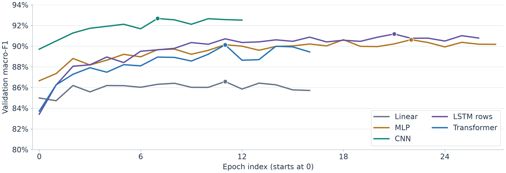
- Linear underfits: training and validation loss flatten together near 0.39–0.40. Best validation macro-F1 0.8658 at index 11; stopped after 17 epochs.
- MLP overfits mildly: training loss keeps falling to 0.18 while validation loss stalls near 0.29 from about index 8. Best 0.9063 at index 22 of 28.
- CNN converges fastest: best 0.9268 at index 7, early-stopped after 13 epochs, with the smallest train/validation gap at the selected epoch (0.200 vs. 0.206).
- LSTM rows fits the training set hardest: validation loss bottoms out at 0.267 and rises to 0.296 while training loss reaches 0.14. Best 0.9118 at index 21 of 27.
- Transformer shows little overfitting (0.263 vs. 0.291 at the last epoch) but plateaus early: best 0.9013 at index 11, stopped after 17 epochs. It looks capacity-unconstrained but optimisation- or data-limited at this scale and with these shared hyperparameters.
- The best-macro-F1 epoch is not always the lowest-validation-loss epoch, which is why the selection rule is stated explicitly.
Confusion matrices
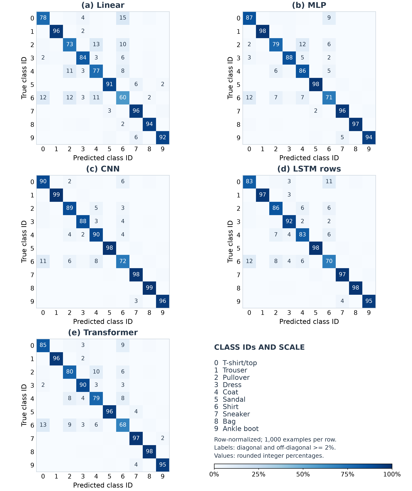
All five matrices share one shape: a strong diagonal for Trouser, Bag and the footwear classes, and one dense off-diagonal block among T-shirt/top, Pullover, Coat and Shirt. Models differ in how dense that block is, not in where it is.
Qualitative results
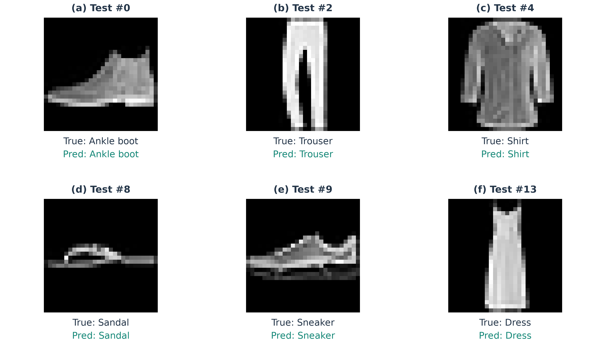
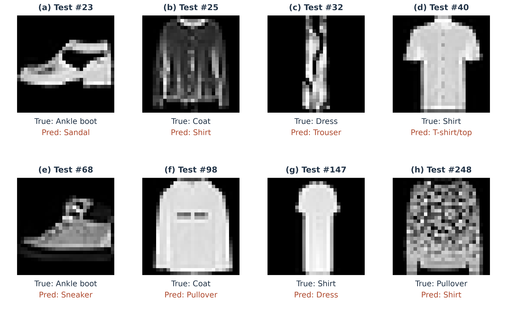
Comparison and discussion
Which is better, and by how much. The CNN has the highest test accuracy (91.82 %) and macro-F1 (91.76 %), the fewest errors (818 of 10,000), the shortest training time (367 s) and the second-smallest parameter count (50,378). It is 2.38 macro-F1 points above the MLP with 4.7× fewer parameters, and 1.87 points above the best sequence model (LSTM rows). The linear model is 7.68 points below the CNN but is the smallest (7,850 parameters) and the fastest at inference (0.52 µs per image).
Where the differences appear. Not uniformly. On Trouser, Bag, Sandal, Sneaker and Ankle boot every model from the MLP up is within about two F1 points. The gaps open in the upper-body cluster: from MLP to CNN, Pullover F1 rises 80.76 → 87.70 and Coat 81.62 → 86.99. Shirt stays the hardest class for every model (58.94 linear, 75.54 CNN).
Why: representation and inductive bias. Linear and MLP see a flat 784-vector in which a pixel and its neighbour are unrelated; local cues such as a collar, a button placket or a sleeve edge must be learned separately at every position. The CNN reuses one 3×3 kernel everywhere and pools small shifts away, which matches exactly those local cues — and it does so with fewer parameters, because the weight sharing replaces 200k dense weights with 18.8k convolution weights. The row LSTM keeps local structure inside each 28-pixel row but has to compress the whole garment into one 128-d state, and its training loss falls far below its validation loss. The patch Transformer has the weakest spatial prior (only a learned position embedding over 16 coarse tokens) and the most parameters (540,170), and under the shared hyperparameters it does not recover that prior from 54,000 images: it ends below the MLP.
Accuracy–speed–parameter trade-off. Linear, MLP and CNN form the frontier in Figure 3: nothing beats them on both quality and cost. The sequence models are dominated — the CNN is both better and faster at inference than every LSTM variant and the Transformer (13.34 µs per image, 3.8× the CNN). If inference cost dominated, the MLP is an intermediate choice (2.36 µs, −2.38 points).
What cannot be concluded. These are single-seed results with shared, untuned hyperparameters and unmatched model capacities. A 1–2 point gap between the MLP, LSTM and Transformer could change with another seed or a learning-rate schedule; the Transformer in particular is likely under-tuned. The result is a ranking for this protocol, not a general ranking of architecture families.
Ablation: LSTM sequence representation
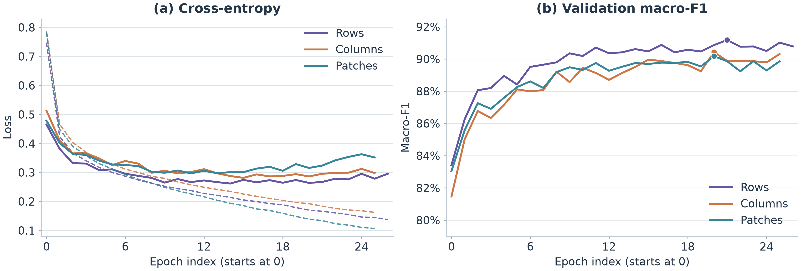
| Variant (vs. rows) | Accuracy change (points) | Macro-F1 change (points) | Parameter change | Inference-time change |
|---|---|---|---|---|
| Columns | −1.31 | −1.23 | +0.0 % | +2.9 % |
| Patches | −1.59 | −1.51 | +13.1 % | −18.4 % |
All three variants see all 784 pixels; only the scan order changes. Rows are best: garments are mostly
left–right symmetric, so one row is a meaningful "slice" (shoulder line, waist, hem). Columns cut across
that symmetry. Patches shorten the sequence to 16 steps, which makes inference 18.4 % faster but costs
1.51 macro-F1 points and 13 % more parameters (larger input size). Caveat: the columns and patches runs
were trained from a working tree with uncommitted changes (c1747a1-dirty), so their exact source
is not fully traceable.
Error analysis
Analysis of the best model (CNN, 818 test errors). Garment group G = T-shirt/top, Trouser, Pullover, Dress, Coat, Shirt; footwear group F = Sandal, Sneaker, Ankle boot.
| Error group | Frequency / rate | Examples | Hypothesised cause | Improvement idea |
|---|---|---|---|---|
| Within garment group G, dominated by Shirt | 678 errors — 82.89 % of all CNN errors, 6.78 % of the test set. Top pairs: Shirt→T-shirt/top 112, Shirt→Coat 82, Shirt→Pullover 61, T-shirt/top→Shirt 59, Pullover→Coat 54 | Figure 6, Figure 10 (left) | Upper-body garments share outline, aspect ratio and brightness; the distinguishing cues (collar, buttons, sleeve length) are a few pixels at 28×28. Shirt is the visual midpoint of the cluster, so it both receives and loses errors: 285 of 1,000 Shirts are missed (recall 71.5 %), and three destinations cover 255 of them. | Controlled augmentation (small shifts, crops) and a higher-resolution or deeper feature extractor; report Shirt F1 next to macro-F1 so this class cannot hide in the average |
| Within footwear group F | 79 errors — 9.66 % of CNN errors, 0.79 % of the test set (mostly Ankle boot ↔ Sneaker, Sandal → Sneaker) | Figure 10 (middle) | Ankle height differs by only a few rows of pixels; strapped sandals and high-top sneakers have similar silhouettes | Low priority: small count, and many cases are ambiguous to a human at this resolution |
| All other confusions | 61 errors — 7.46 % of CNN errors, 0.61 % of the test set | Figure 10 (right): a narrow Dress read as Trouser | Atypical shapes, e.g. a narrow dress whose silhouette resembles trousers, and a few garments predicted as Bag | Inspect for label noise before modelling changes |
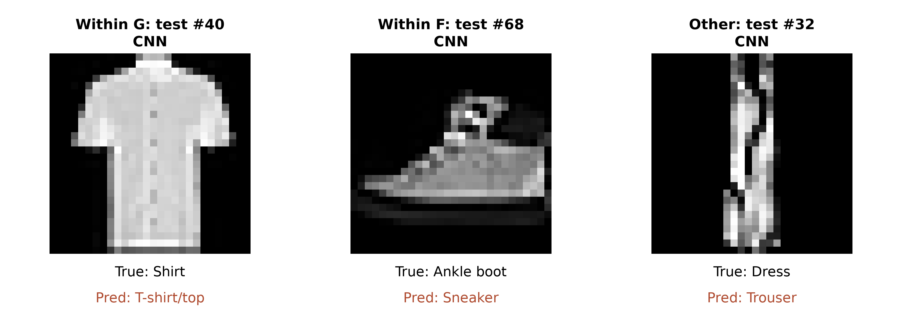
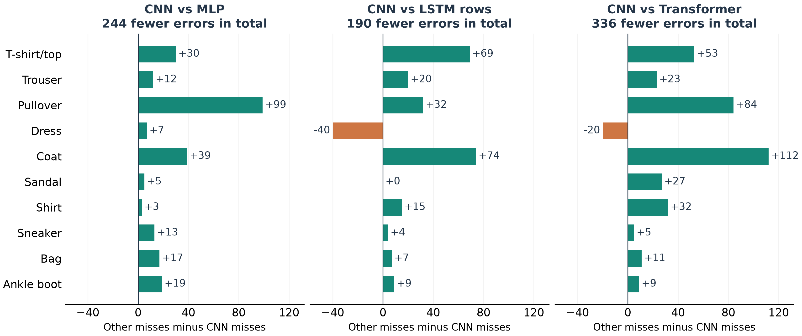
Limitations and conclusion
Data limits. Fashion-MNIST is 28×28, grayscale, one centred object per image, with no metadata. It is a controlled benchmark, not a sample of real catalogue photographs, so absolute accuracies say little about production performance.
Method limits. One shared hyperparameter setting (Adam, lr 1e-3, batch 128, no scheduler, no augmentation) rather than a per-model search; dropout and normalization differ between models and parameter budgets are not matched, so no model is shown at its own best.
Experimental limits. A single seed (42): no variance or significance estimate. Two LSTM variants (columns, patches) come from an uncommitted working tree. Inference time is batched, forward-only, on one GPU, and would re-order on a CPU or at batch size 1.
Answer to the research question. Representation matters more than size here. Giving the model the 2D grid with a locality prior (CNN) gave the best quality at the lowest training time and with fewer parameters than the MLP; reading the image as a sequence (LSTM, Transformer) did not beat the CNN on any axis under this protocol. Among sequence encodings, row order worked best.
Future work. Repeat with three or more seeds and matched parameter budgets; tune the Transformer and LSTM on validation only (learning-rate schedule, depth, patch size); test controlled augmentation for the upper-body classes; compare LSTM with GRU; save per-image logits for every run.
Reproducibility
Each reported number is traceable to its configuration, dataset split, checkpoint, run ID and commit.
Every run folder under results/a1/runs/ holds the config.yaml it was trained
with, history.csv, metrics.json (environment, commit) and
test_metrics.json.
| Result | Config | Split | Checkpoint | Run ID | Training commit |
|---|---|---|---|---|---|
| Linear | results/a1/runs/<run_id>/config.yaml (snapshot of configs/a1.yaml) | split_seed42.json | <run_id>/best.pt | a1_linear_s42_1027-0134 | c1747a1 |
| MLP | a1_mlp_s42_1027-0143 | c1747a1 | |||
| CNN | a1_cnn_s42_1027-0157 | c1747a1 | |||
| LSTM rows | a1_rnn_rows_s42_1027-0204 | c1747a1 | |||
| Transformer | a1_transformer_patches_s42_1027-0242 | c1747a1 | |||
| LSTM columns | a1_rnn_cols_s42_1027-0217 | c1747a1-dirty | |||
| LSTM patches | a1_rnn_patches_s42_1027-0229 | c1747a1-dirty |
Run folders and tables were committed in fbf5cdc, the
best.pt checkpoints in 44d4fd2; the A1 model, data and config code is unchanged
between the training commit and both of these.
Install, data-preparation, training, and evaluation commands are in the repository
README.md.
AI usage disclosure (Assignment 1)
AI_USAGE.md.| Tool / model | Used by | Stage | Purpose | Affected files / sections | Verification | Responsible member |
|---|---|---|---|---|---|---|
| Claude (Claude Code, Opus 5) | Hồ Hồng Phúc Nguyên | 09 Sep 2026 — course website setup | Generate this assignment page template from the course handbook (section structure, required metric tables, rubric) | docs/assignments/assignment-1.html |
Every section checked against the handbook requirements; the page was opened and its links verified. No experimental content was generated. | Hồ Hồng Phúc Nguyên |
| Claude (Claude Code, Opus 5) | Hồ Hồng Phúc Nguyên | 22–23 Sep 2026 — implementation and review before the M1 draft | Coding assistance and debugging: reviewing the merged data-pipeline branch, and completing the training framework (metrics, train/validation loop with checkpointing and early stopping, entry points, figures, profiling). Also used to draft the descriptive sections of this page from the values the code uses. | src/engine/metrics.py, src/engine/trainer.py,
src/engine/plots.py, src/engine/profiler.py, src/train.py,
src/evaluate.py, configs/a1/base.yaml; this page; README.md |
[how the output was edited and checked, and against what sources] | Hồ Hồng Phúc Nguyên |
| Claude (Claude Code, Opus 5.5) | Hồ Hồng Phúc Nguyên | 28 Oct 2026 — M2 Final package | Rewrite this page with the final seven-run comparison; fill member roles on the landing page | docs/assignments/assignment-1.html, docs/index.html, docs/assets/img/a1/ |
Every number recomputed from the committed run folders and comparison.csv, and checked
against the report and slides; parameter counts checked from the layer sizes; figures taken
unchanged from the report. |
Hồ Hồng Phúc Nguyên |
| ChatGPT (OpenAI GPT; version not recorded) | Phan Quốc Đại Sơn | October 2026 — implementation and debugging of the sequence models | Coding assistance, debugging and concept explanation: rows/columns/patches sequence conversion, LSTM and Patch Transformer classifiers (CLS token, positional embeddings), training/evaluation issues | src/models/rnn.py, src/models/transformer.py, A1 configs; report §5.4–5.5
and the LSTM representation comparison |
Suggestions adapted to the project's model interface; training and evaluation run locally; tensor shapes and metrics checked against recorded runs and the PyTorch documentation. Reported metrics come from recorded experiments only. | Phan Quốc Đại Sơn |
| OpenAI Codex (model not recorded) | Nguyễn Nhật Nam | 27–28 Oct 2026 — A1 report | Report writing, result analysis, figures and LaTeX formatting, section by section under the student's direction | reports/a1/, scripts/a1_report/, results/a1/tables/ |
Drafts and figures checked against the code, saved run outputs and cited references; PDF compiled and inspected. No new training or checkpoint inference. | Nguyễn Nhật Nam |
Grading rubric (within Assignment 1)
| Component | What is assessed | Weight |
|---|---|---|
| Problem & data understanding | Formulation, EDA, split, leakage awareness | 15% |
| Data & training pipeline | Dataset/DataLoader, preprocessing, train/val/test loop | 15% |
| Methods & implementation | Five mandatory models, correct losses, explanations | 30% |
| Experimental design & results | Fair comparison, metrics beyond accuracy, curves/tables | 20% |
| Analysis & error analysis | Inductive bias discussion, failure cases, limitations | 10% |
| Reproducibility, report & presentation | Repo, pages, video, disclosure, writing quality | 10% |